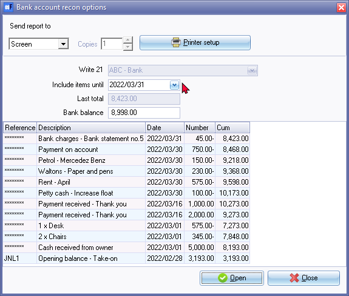
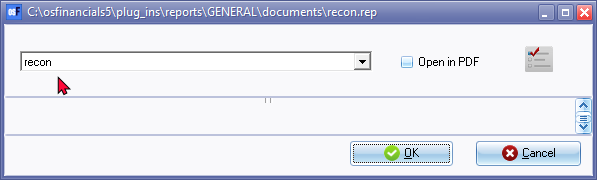
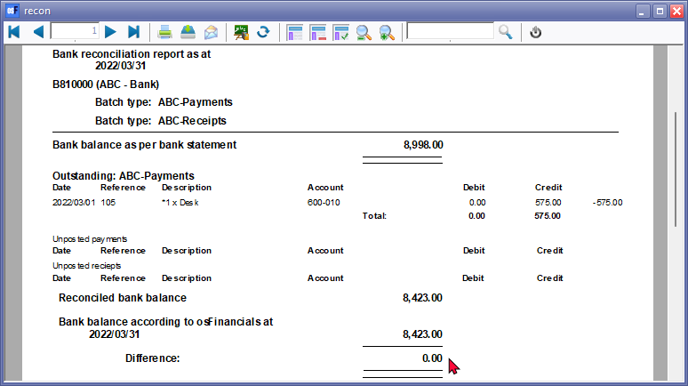

Bank reconciliation reports
A bank reconciliation report typically includes the following information:
- Bank statement balance: The balance of the bank account as shown on the bank statement.
- Company statement balance: The balance of the bank account as shown in the company's records.
- Adjustments: Any adjustments made to the company's records to reconcile them with the bank statement, such as outstanding checks or deposits in transit.
- Reconciled balance: The final balance of the bank account after all adjustments have been made.
- Date range: The period covered by the bank statement and the company's records.
- Explanation of differences: Any differences between the bank statement and the company's records should be explained, including any discrepancies that could not be resolved.
The bank reconciliation report provides a clear picture of the company's cash position and ensures that the company's records are accurate and up-to-date. It is an important tool for financial management and helps to identify any errors or discrepancies in the financial records.
To print a bank reconciliation report:
- Click on the Report icon on the "Reconcile bank account options" screen.

|
|
All the data of the Bank account, Date, Bank balance, etc. should still be the same as per your your previous selection criteria. |

- Click on the Open or Reconcile button. The "recon.rep" report parameters screen will be displayed:

|
|
If you wish to print the bank reconciliation report in the PDF file format, you may tick the "Open in PDF" option. |

- The "Bank reconciliation report as at" is displayed:

|
|
After the bank reconciliation is finalised, the Difference should be 0.00. If there is an amount in the Difference section of the report, you may need to find the differences and fix them. - See Troubleshooting differences. |